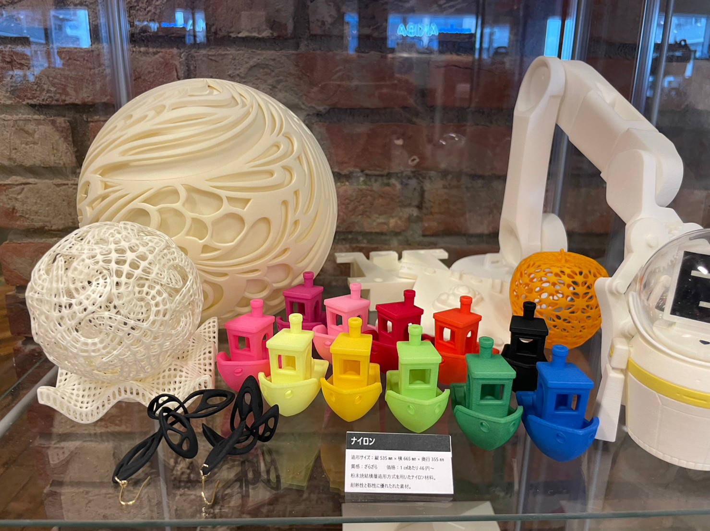
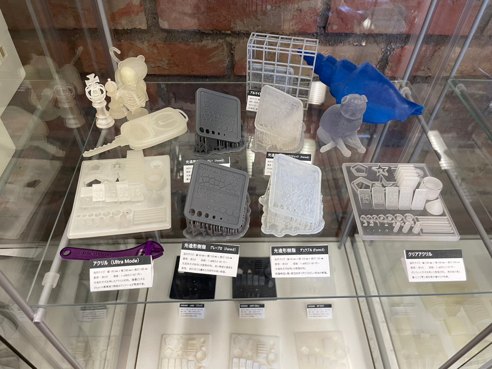
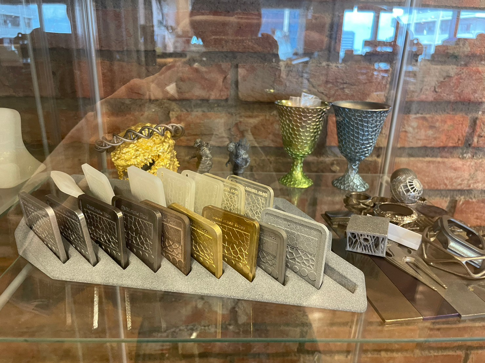
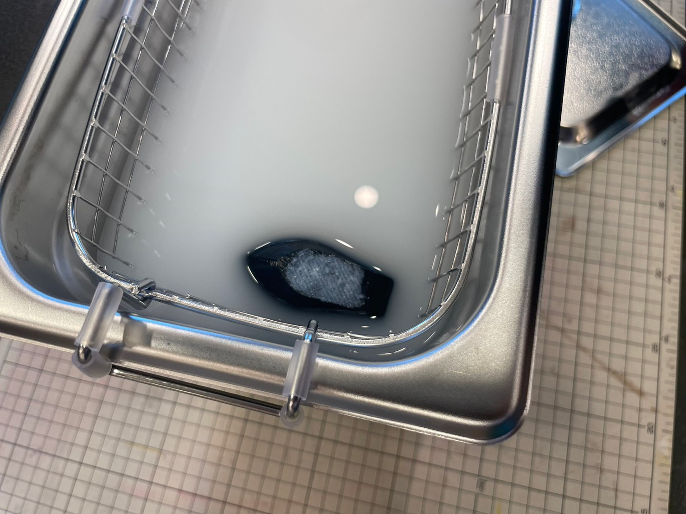

私たちは つくり手が描く未来を共に実現したいと考えています。
新しいことに挑戦しようとしている誰もが 想像する未来をモノにしてほしい。
技術、経験、知識、そして仲間。 モノづくりのすべてが揃う場所がここにあります。
画像をクリックすると公式HPに飛べます

ファブラボではないですが、鎌倉つながりで案内していただいたので紹介します。
DMM英会話♪でおなじみのDMMさんが持っているメイカースペースです。
実は3Dプリンターの記事を出していたり、プラットフォームがあったり
かなり3D界隈に進出しているのです!

さすが企業です。フィラメントの種類の豊富さがすごい…!


初めて見る素材に大興奮のかわせみでした
このサポートをとかしてくれる液めちゃくちゃ良くないですか？
(処理がすごく大変だそうです)

このように充実度合いに圧倒されました。
今回は鎌倉プロジェクトからのご縁で見学させてもらいました。
以前から本で読んでいた方にもお会いできてお話しできたのが楽しかったです。
ゼミの他のプロジェクトがこんな風に世界を広げるきっかけになるなんて
人生って面白いですね
ここで会ったアオイさんの作品が素敵でした（新宿のハンズなどで売っています。）